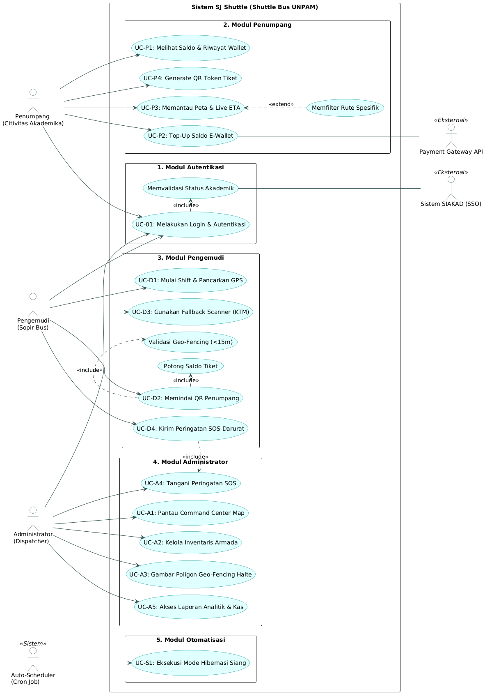

Diagram di atas mengilustrasikan batasan sistem (System Boundary) dari aplikasi SJ Shuttle yang terbagi ke dalam 5 modul utama. Setiap aktor memiliki porsi hak akses yang diatur secara ketat, dengan beberapa interaksi me-trigger API pihak ketiga (SIAKAD & Payment Gateway).
Pengguna masuk ke dalam aplikasi menggunakan kredensial Single Sign-On (SSO). Sistem SJ Shuttle akan secara otomatis memanggil API SIAKAD untuk memverifikasi identitas dan menentukan apakah pengguna adalah mahasiswa Reguler atau Kelas Karyawan (CK/CS) guna penyesuaian tarif tiket nantinya.
| Skenario Utama (Kondisi: Layar otentikasi terbuka) | |
|---|---|
| Aksi Aktor: Memasukkan kredensial lalu menekan "Masuk". | Reaksi Sistem: Menerima & mengenkripsi data, cross-check ke API SIAKAD, mengunduh meta-data status mahasiswa, menerbitkan Token Sanctum, dan mengarahkan ke Dashboard. |
| Skenario Alternatif | |
| Alt 1: Kredensial tidak valid → Sistem menolak akses dengan error "Kredensial tidak sesuai". Alt 2: API SIAKAD down → Sistem menampilkan notifikasi gagal menyinkronkan data. | |
Penumpang memasukkan nominal pengisian saldo untuk e-wallet mereka. Sistem kemudian memanggil layanan Payment Gateway Midtrans Snap untuk menampilkan antarmuka pembayaran. Setelah penumpang menyelesaikan pembayaran via m-banking, peladen Midtrans akan mengirimkan Webhook ke server SJ Shuttle untuk menambah saldo secara instan.
| Skenario Utama (Kondisi: Penumpang berada di menu Keuangan/Dompet) | |
|---|---|
| Aksi Aktor: Memasukkan nominal (min. Rp10.000), menekan "Isi Saldo", lalu menyelesaikan transfer di pop-up Midtrans. | Reaksi Sistem: Memvalidasi request, memunculkan jendela Snap, menerima Webhook "Settlement", memverifikasi signature, menyuntikkan nominal ke wallet, dan mengirim notifikasi. |
| Skenario Alternatif | |
| Alt 1: Penumpang membatalkan pembayaran di pop-up → Mengubah status transaksi menjadi Canceled. Alt 2: Transfer tidak sesuai → Status ditahan (Pending) hingga nominal sesuai. | |
Sistem menciptakan kode matriks QR dinamis yang memuat UUID terenkripsi. Tampilan visual bingkai QR akan dibedakan menjadi warna Emas untuk mahasiswa Kelas Karyawan (CK/CS) dan Abu-abu untuk mahasiswa Reguler. Hal ini berfungsi sebagai penanda prioritas visual bagi pengemudi saat penumpang hendak naik bus.
| Skenario Utama (Kondisi: Penumpang memunculkan menu Bayar Tiket) | |
|---|---|
| Aksi Aktor: Menekan tombol "Bayar Tiket" (Generate QR). | Reaksi Sistem: Mengecek saldo & status akademik, menghasilkan QR berbatas waktu (5 menit), dan merender QR di layar ponsel sesuai warna tier mahasiswa. |
| Skenario Alternatif | |
| Alt 1: Saldo Reguler kurang dari Rp 7.500 → Pembuatan QR diblokir, muncul peringatan "Saldo Kurang". Alt 2: Batas waktu 5 menit habis → Layar di-refresh dan QR lama dihanguskan untuk mencegah penipuan. | |
Pengemudi memindai QR penumpang di pintu bus. Server langsung mengomputasi jarak koordinat perangkat pengemudi dan penumpang menggunakan algoritma Haversine. Apabila jarak keduanya divalidasi kurang dari 15 meter, sistem akan mengeksekusi pemotongan saldo secara cashless.
| Skenario Utama (Kondisi: Penumpang menunjukkan QR Token) | |
|---|---|
| Aksi Aktor: Pengemudi mengarahkan lensa kamera scanner ke HP penumpang. | Reaksi Sistem: Ekstrak UUID, komputasi jarak GPS, eksekusi pemotongan Rp 0 (CK/CS) atau Rp 7.500 (Reguler), kurangi sisa kursi bus, dan ubah layar penumpang menjadi warna Hijau (LUNAS). |
| Skenario Alternatif | |
| Alt 1: Jarak lebih dari 15 Meter (Indikasi Fake GPS) → Transaksi ditolak, layar menjadi Merah. Alt 2: Kapasitas 47 Seat penuh → Transaksi dihentikan, peringatan "Armada Penuh". | |
Fitur penunjang ini digunakan oleh pengemudi sebagai mitigasi apabila gawai (HP) milik penumpang mati total atau berada di area blank spot sinyal sehingga tidak dapat membuat QR dinamis. Fitur ini memastikan kelancaran antrean penumpang agar tidak tersendat.
| Skenario Utama (Kondisi: Mahasiswa melapor HP mati) | |
|---|---|
| Aksi Aktor: Meminta KTM, menekan tombol "Mode Darurat", dan memindai barcode KTM / input manual NIM. | Reaksi Sistem: Mencari data mahasiswa di cache offline, mencatat status Pending Deduction, dan memotong saldo otomatis saat HP penumpang kembali online. |
| Skenario Alternatif | |
| Alt 1: NIM tidak terdaftar → Sistem menampilkan peringatan "Akses Ditolak: Identitas Tidak Dikenali". | |
Jika armada mengalami kerusakan teknis atau kecelakaan, sopir dapat menekan tombol panik (SOS). Sistem akan langsung membekukan fungsi transaksi tiket pada bus tersebut untuk mencegah penumpang baru naik, dan secara simultan mengirimkan peringatan beserta koordinat lokasi ke Dasbor Pusat Administrator.
| Skenario Utama (Kondisi: Armada butuh evakuasi/bantuan) | |
|---|---|
| Aksi Aktor: Membuka panel SOS, konfirmasi, dan menggeser Slider Darurat. | Reaksi Sistem: Merubah status armada menjadi OFFLINE-DARURAT, membekukan QR Scanner, memicu alarm audio dan indikator merah di Web Dashboard Admin. |
| Skenario Alternatif | |
| Alt 1: Sinyal pengemudi putus → Log darurat disimpan lokal dan sistem melakukan retry pemancaran bertubi-tubi hingga sinyal didapat. | |
Sistem dirancang untuk memangkas biaya komputasi peladen cloud. Mengingat bus SJ Shuttle tidak beroperasi pada siang hari, sistem Cron Job (Auto-Scheduler) akan menidurkan penerimaan koneksi GPS secara otomatis dan membangunkan peladen kembali pada jam sibuk sore hari.
| Skenario Utama (Kondisi: Waktu menunjukan jam kosong) | |
|---|---|
| Aksi Aktor (Sistem): Memicu scheduler di pukul 10:00 WIB dan menunggu hingga pukul 15:30 WIB. | Reaksi Sistem: Jam 10:00 memutus WebSocket pengemudi, mengubah status peta menjadi "Istirahat". Jam 15:30 mengaktifkan kembali (wakeup) WebSocket untuk persiapan shift sore. |